| 목적 | 차세대 미끼 제형 4종과 기존 미끼틀(대조군)의 야생 멧돼지 섭취 기호도 비교, 비대상 동물 반응 확인, 노출 방식(미끼틀·지표·매립)에 따른 섭취 차이 확인 |
|---|---|
| 장소 | 충남 공주시 유구읍 문금리 142-5 (C지점, 36.639449°N 127.010684°E) — 능선 통로 연결 멧돼지 주 이동 길목 |
| 선정 사유 | 10/1(2마리)·10/8(최대 4마리)·10/15(4마리, 7분 체류) 연속 출현, 10/11 유인제 2통 살포 구역으로 공주 3개소 중 출현 빈도 최고 |
| 기간 | 2026.10.17(토) 08:00 설치 ~ 10.31(토) 종료 — 현장 실측 2회(10/20, 10/27), 보충 설치 1회(10/25) |
| 관측 장비 | 4G 무인 동작감지(PIR) 카메라 1대, 주간 컬러 / 야간 적외선, 감지 시 10~60초 클립 녹화 (10/17 화각 재조정) |
| 판정 방법 | ① 섭취량: 현장 방문 시 잔여 미끼 개수 직접 계수(사진 기록) ② 섭취 주체·반응: 해당 기간 영상 판독 ③ 개체수: 아래 Ⅱ의 중복 배제 기준 적용 |
동작감지 카메라는 동물 한 마리가 머무는 동안에도 클립을 여러 번 연속 촬영하므로, 영상 건수를 그대로 개체수로 합산하면 실제보다 크게 부풀려집니다(예: 오소리 1마리가 10/27 새벽 39분간 머물며 영상 10건 생성). 본 보고서는 다음 기준으로 집계했습니다.
| 지표 | 정의 |
|---|---|
| 독립 방문(회) | 같은 카메라·같은 동물종의 연속 영상 간격이 30분 이내이면 하나의 방문으로 통합 (야생동물 무인카메라 조사에서 통상 쓰는 독립 기준) |
| 방문별 개체수 | 그 방문의 영상 중 한 화면에 동시에 찍힌 최대 마릿수(MaxN). 영상 건수와 무관 |
| 연 출현 개체수(두·회) | 방문별 개체수의 합계. 같은 개체의 재방문이 포함되므로 방문 강도를 나타냄 |
| 최소 확인 개체수 | 기간 중 가장 큰 방문별 개체수. 개체 식별이 불가하므로 실제 이용 개체수의 하한값으로 해석 |
| 반응 단계 | 섭취 먹는 행동 확인 · 접촉 미끼에 코를 대거나 건드림 · 굴착 미끼 배치지 토양을 파헤침 · 탐색 살포지 지면 냄새 탐색·배회 · 통과 머물지 않고 지나감 (한 방문에 여러 행동이 있으면 가장 높은 단계로 분류) |
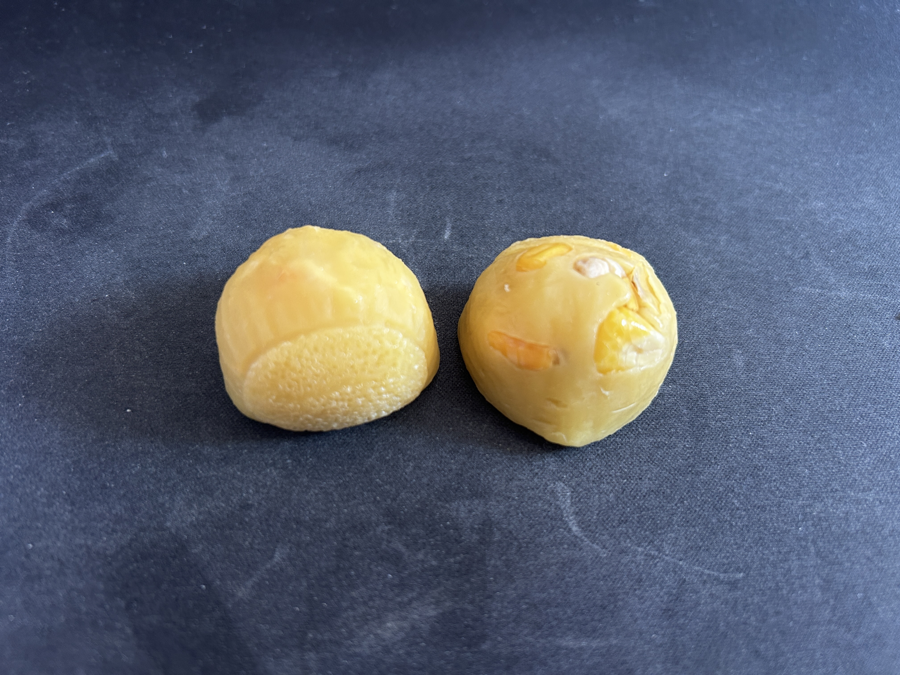
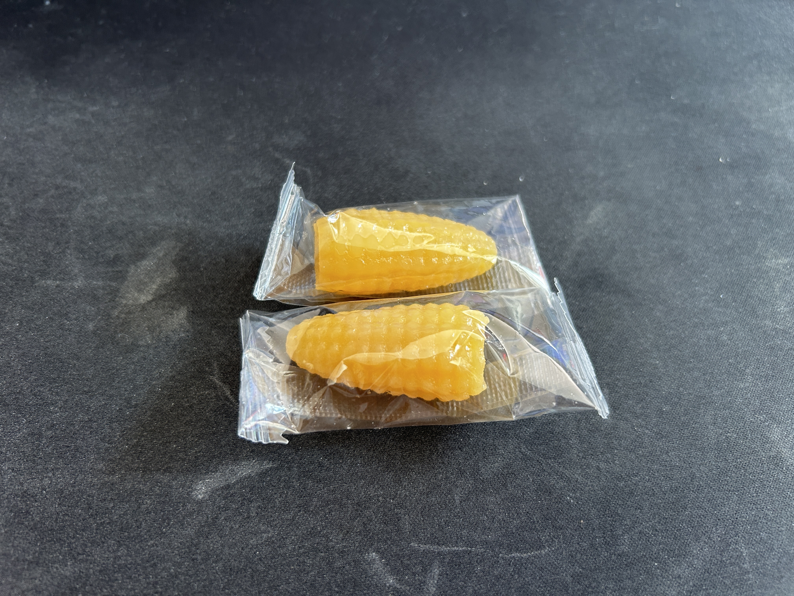
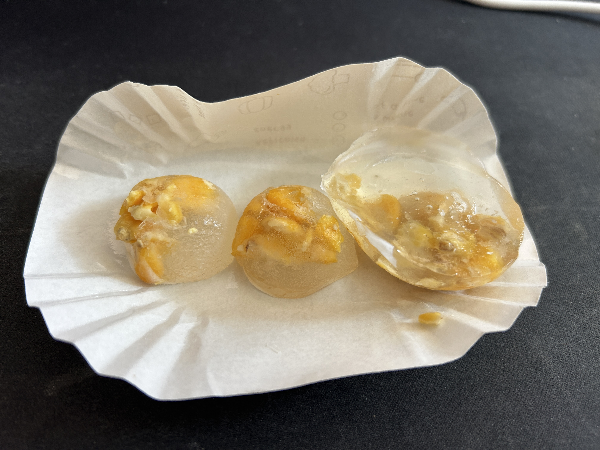
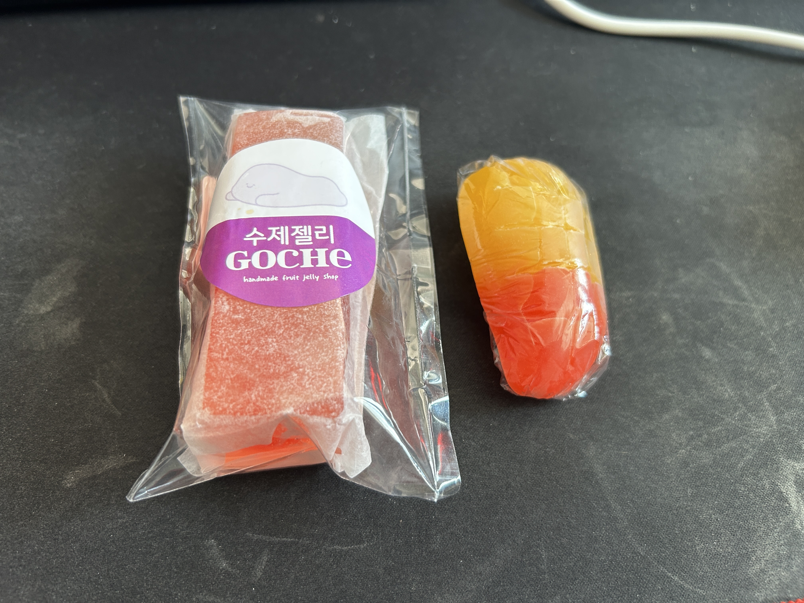
| 구분 | 제형 | 주요 성분 / 특성 | 설치일 | 수량 | 설치 방식 |
|---|---|---|---|---|---|
| Type A 개선 개발 | 유인제 밀랍 성형형 | 천연 밀랍 + 멧돼지 유인제 + 옥수수 배합사료, 가열 용융 후 방수 고형화 | 10.17(토) 08:00~08:35 | 10개 | 지표면 열별 그리드 배열 |
| Type B 시판 기성품 | 옥수수모양 젤리 | 옥수수퓌레 25%, 카라기난, 옥수수향 (319kcal/100g), 낱개 포장 | 10개 | ||
| Type C 신규 개발 | 밤모양 옥수수 젤라틴 젤리 | 식용 젤라틴 : 옥수수 알곡 = 1:1, 밤 외형 반구 성형 | 10개 | ||
| Type D 신규 개발 | 자두복숭아 수제 젤리바 | 국내산 젤라틴 36% + 자두·복숭아청 50%, 사각 바 약 60g | 10개 | ||
| 대조군 | 기존 미끼틀 | 동물 배합사료(옥수수·소맥 등) 거치형 미끼틀 | 10개 | ||
| 1차 설치 소계 (5종) | 50개 | ||||
| 보충 | 유인제배합 고형사료 | 1단계에서 기호도가 가장 높았던 사료. 노출(지표) vs 매립 비교 목적 | 10.25(일) | 10개 | 지표 5개 매립 5개(5~10cm) |
| 보충 | 기존 미끼틀 | 미끼틀 내부 유인 사료 보충 | 10.25(일) | 확인 필요 | 거치(매몰 고정) |
※ 사전 유인: 10/11 C지점 능선 통로에 멧돼지 유인제 2통 살포. ※ 1차 실측(10/20) 후 잔여 미끼는 회수하지 않고 현장에 그대로 두었음.
| 제형 | 설치 | 섭취 | 잔여 | 섭취율 | 섭취율 그래프 | 잔여 미끼 상태 |
|---|---|---|---|---|---|---|
| Type B 옥수수 젤리 | 10 | 10 | 0 | 100% | 전량 소진 (기호도 1위) | |
| Type C 밤모양 젤리 | 10 | 3 | 7 | 30% | 잔여 7개 탄성·형태 유지 (2위) | |
| Type A 밀랍 성형형 | 10 | 1 | 9 | 10% | 잔여 9개 방수 외형 유지 | |
| Type D 자두복숭아 젤리바 | 10 | 1 | 9 | 10% | 잔여 9개 형태·향 유지 | |
| 대조군 기존 미끼틀 | 10 | 1 | 9 | 10% | 사료 반응 저조 | |
| 계 | 50 | 16 | 34 | 32% |
| 미끼 / 배치 | 설치 | 섭취 | 섭취율 | 현장 확인 내용 |
|---|---|---|---|---|
| 고형사료 — 지표 노출 | 5 | 5 | 100% | 바닥을 훑은 섭식 흔적, 잔여 없음 |
| 고형사료 — 매립(5~10cm) | 5 | 5 | 100% | 주둥이로 깊게 파헤친 굴토 흔적, 잔여 없음 |
| 기존 미끼틀 내부 사료 | 확인 필요 | 0 | 0% | 접근·섭취 흔적 없음 (외면) |
| 동물 | 영상 (건) | 독립 방문 (회) | 연 출현 (두·회) | 최소 확인 개체 | 방문별 최고 반응 단계 (회) | 실험미끼 A~D 섭취 | ||||
|---|---|---|---|---|---|---|---|---|---|---|
| 섭취 | 접촉 | 굴착 | 탐색 | 통과 | ||||||
| 멧돼지 | 17 | 6 | 12 | 7두 | 4 | 1 | – | – | 1 | 섭취 (1차) |
| 오소리 | 50 | 23 | 25 | 2두 | 1※ | – | 1 | 16 | 5 | 0회 |
| 고라니 | 4 | 1 | 1 | 1두 | – | – | – | – | 1 | 0회 |
| 계 | 71 | 30 | 38 | – | 5 | 1 | 1 | 16 | 7 | |
※ 오소리 섭취 1회(10/23, 2마리)는 지면에 있던 사료를 먹은 것으로 실험미끼 A~D에는 접근하지 않음. 해당 사료의 정확한 종류는 확인 필요.
※ 해석 예: 멧돼지 영상 17건은 "17마리"가 아니라 6회 방문, 최소 7마리. 10/20·10/22·10/26의 단독 개체가 10/27 군집 7마리 중 한 마리일 가능성이 있어 단순 합산(12두)은 실제 개체수가 아님.
| No | 일시 | 동물 | 개체 | 영상 | 반응 | 관찰 내용 | 해당 미끼 |
|---|---|---|---|---|---|---|---|
| 1 | 10/20 02:31~02:32 | 멧돼지 | 1 | 3 | 섭취 | 살포 구역 진입, 실험미끼 탐색 후 선별 섭취 | 1차 5종 |
| 2 | 10/20 03:24 | 멧돼지 | 1 | 1 | 섭취 | 52분 후 재방문, 잔여 미끼 섭취 탐색 | 1차 5종 |
| 3 | 10/21 23:18 | 오소리 | 1 | 1 | 탐색 | 유인제 살포지 지면 냄새 탐색·배회, 미끼 미접근 | 1차 잔여 |
| 4 | 10/22 02:26~02:41 | 멧돼지 | 1 | 4 | 접촉 | 잔여 실험미끼에 밀착 접근해 냄새 맡고 건드림, 섭취 미확인, 15분 배회 후 이탈 | A·C·D 잔여 |
| 5 | 10/23 19:47~20:30 | 오소리 | 2 | 8 | 섭취 | 2마리가 지면 사료 탐색·섭취, 25분 뒤 재접근해 추가 섭취. 실험미끼 A~D 미접근 | 지면 사료* |
| 6 | 10/23 22:11 | 오소리 | 2 | 1 | 탐색 | 최종 탐색 후 능선 수풀로 퇴장 | – |
| 7 | 10/24 03:29 | 오소리 | 1 | 1 | 통과 | 냄새만 확인하고 지나감 | – |
| 8 | 10/24 23:10~23:11 | 오소리 | 1 | 2 | 탐색 | 살포 구역 진입, 지면 냄새 탐색 후 이동 | – |
| 9 | 10/25 05:09 | 오소리 | 1 | 1 | 통과 | 상단 능선 이동 통과 (보충 설치 전) | – |
| 10 | 10/25 19:22 | 오소리 | 1 | 1 | 탐색 | 카메라 전면 지면 냄새 확인·배회 | 2차 미접촉 |
| 11 | 10/25 23:31 | 오소리 | 1 | 1 | 탐색 | 우측 경계면 냄새 탐색 후 통과 | 2차 미접촉 |
| 12 | 10/26 19:50 | 오소리 | 1 | 1 | 탐색 | 지면 냄새 확인 후 수풀 이동 | 2차 미접촉 |
| 13 | 10/26 20:57~20:58 | 멧돼지 | 1 | 3 | 섭취 | 능선에서 살포지로 진입, 전면 집중 먹이 탐색·섭취 반응 (약 2분) | 2차 고형사료 |
| 14 | 10/26 22:25 | 멧돼지 | 1 | 2 | 통과 | 살포지 재진입 후 화각 통과·주변 탐색 | – |
| 15 | 10/26 23:23~23:25 | 오소리 | 1 | 2 | 탐색 | 지면 냄새 확인·배회, 미끼 미섭취 | 2차 미접촉 |
| 16 | 10/27 00:22 | 오소리 | 1 | 1 | 탐색 | 살포지 주변 냄새 탐색·배회 | 2차 미접촉 |
| 17 | 10/27 03:24~03:25 | 멧돼지 | 7 | 4 | 섭취 | 선두 개체 진입 후 무리가 연이어 진입, 최대 7마리 동시 집중 섭식 후 능선으로 분산 | 2차 고형사료 (10개 완식) |
| 18 | 10/27 03:42~04:21 | 오소리 | 1 | 10 | 탐색 | 멧돼지 퇴장 17분 뒤 진입, 39분간 섭식 구역 잔여 냄새·미끼틀 주변 탐색, 미접촉 | 미끼틀 미접촉 |
| 19 | 10/27 19:08~19:33 | 오소리 | 1 | 2 | 탐색 | 멧돼지 섭식 구역 바닥 냄새 탐색·배회 | – |
| 20 | 10/28 19:09~19:19 | 오소리 | 1 | 3 | 탐색 | 상단 경계면 배회 후 우측 지면 탐색, 능선 퇴장 | – |
| 21 | 10/29 01:20 | 오소리 | 1 | 2 | 탐색 | 상단 능선 진입, 지면 냄새 탐색 후 통과 | – |
| 22 | 10/29 23:17 | 오소리 | 1 | 1 | 탐색 | 수풀 경계면 배회·냄새 탐색 | – |
| 23 | 10/29 23:54~23:55 | 오소리 | 1 | 2 | 탐색 | 살포지 중앙 지면 탐색 후 능선 퇴장 | – |
| 24 | 10/30 03:58 | 오소리 | 1 | 1 | 탐색 | 상단 지면 냄새 탐색 후 통과 | – |
| 25 | 10/30 14:24~14:29 | 고라니 | 1 | 4 | 통과 | 주간, 수풀 채식·정지 관찰 후 사면으로 퇴장, 미끼 무관심 | – |
| 26 | 10/31 00:06 | 오소리 | 1 | 1 | 통과 | 주변 수풀 탐색 후 통과 | – |
| 27 | 10/31 01:16 | 오소리 | 1 | 1 | 통과 | 능선 사면 이동 통과 | – |
| 28 | 10/31 20:17~20:22 | 오소리 | 1 | 2 | 굴착 | 미끼 배치지 접근 후 앞발로 토양 굴착 (10/27 멧돼지 굴토 지점), 미끼 섭취 없음 | 매립 지점 |
| 29 | 10/31 21:34~21:42 | 오소리 | 1 | 4 | 탐색 | 재진입 후 지면·경계면 잔여 냄새 탐색 | – |
| 30 | 10/31 22:51 | 오소리 | 1 | 1 | 통과 | 상단 이동 통과 | – |
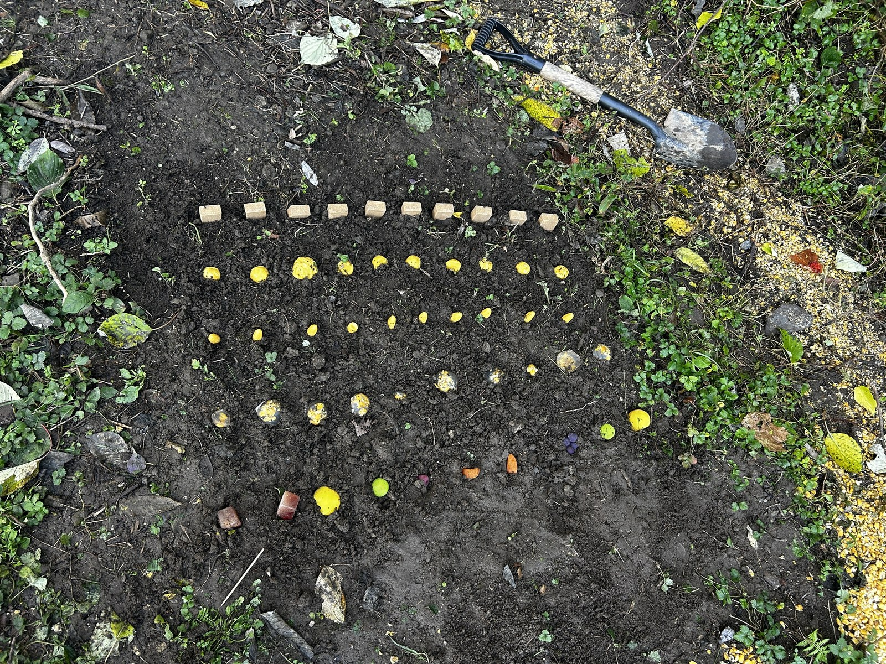
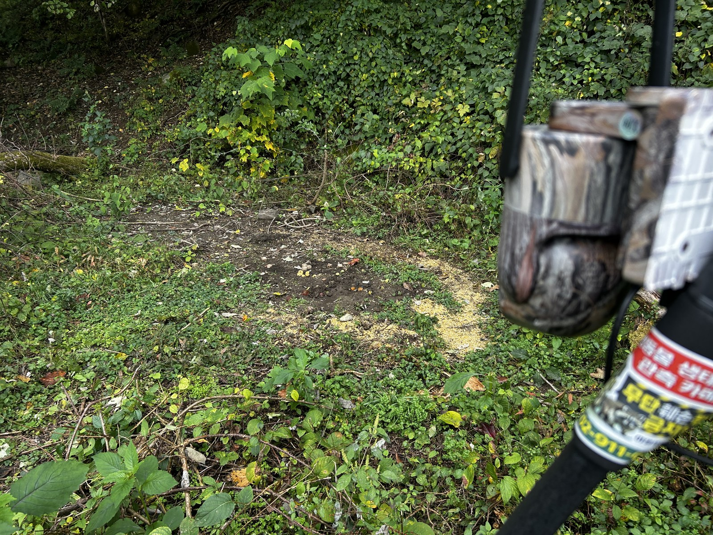
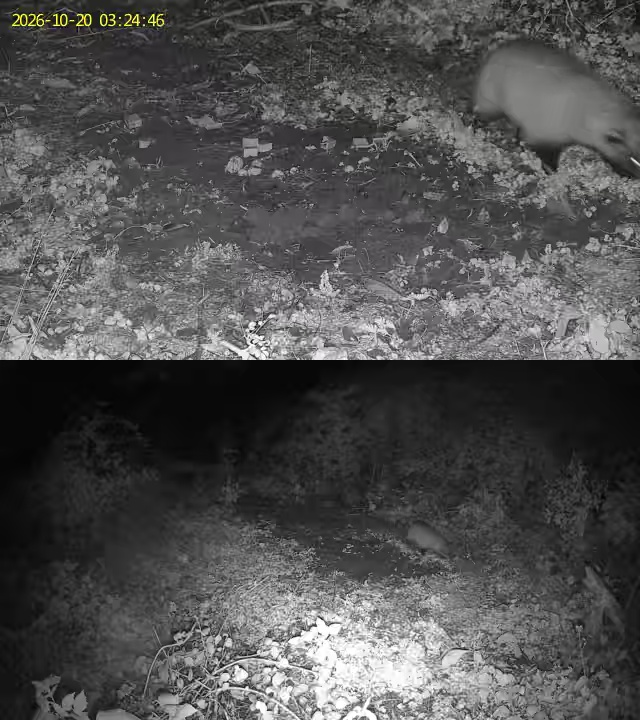
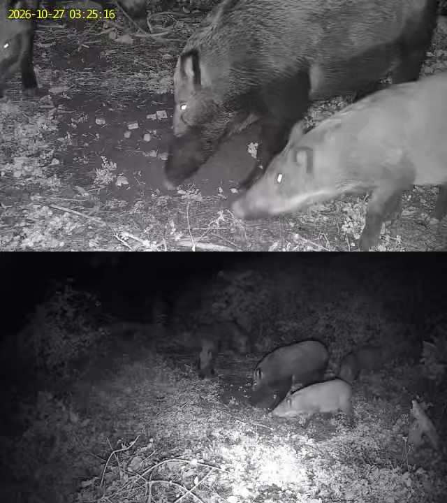
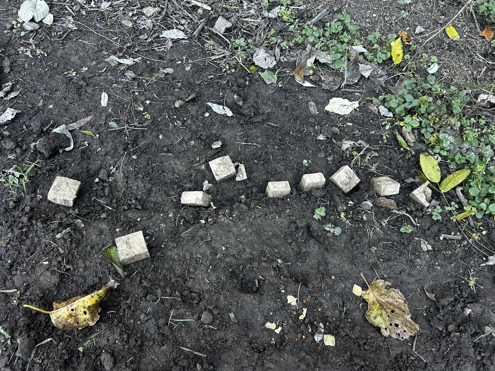
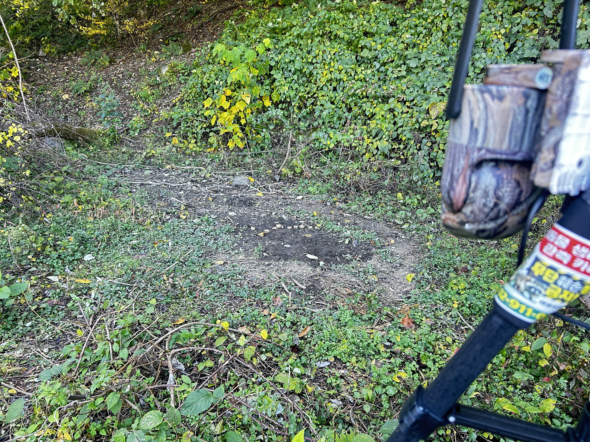
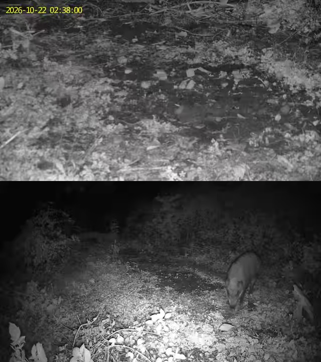
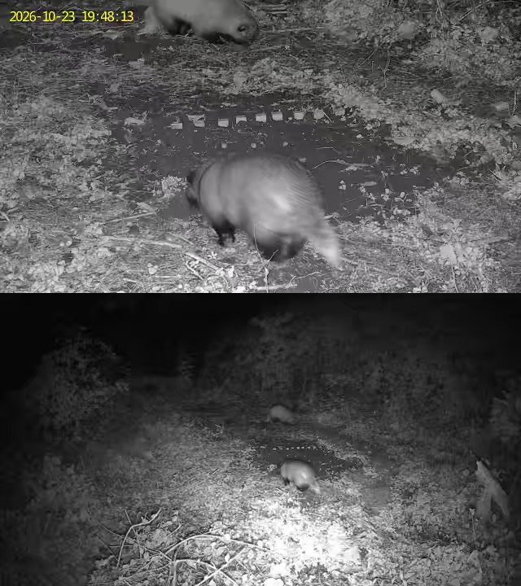
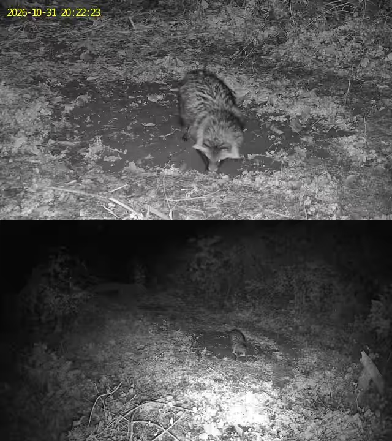
차세대 제형 실증 이전, 4개 지점에서 기존 미끼(미끼틀·유인제배합 고형사료·젤리형)를 운용한 결과를 같은 기준(30분 독립 방문)으로 정리했습니다. 이 시기 영상 상당수는 개체수가 기록되지 않아 최소 확인 개체수는 개체수가 기록된 방문에서만 산출했습니다.
| 지점 | 미끼 (설치일) | 동물 | 영상 | 독립 방문 | 최소 확인 개체 | 주요 관찰 |
|---|---|---|---|---|---|---|
| C 문금리 142-5 | 미끼틀 + 유인제배합 고형사료 (7/1~) | 멧돼지 | 34 | 11 | 8두 | 9/9·9/15 새끼 8마리 군집 섭식, 9/6·9/7 4마리 집중 채식, 10/15 4마리 7분 체류 (11회 중 4회 개체수 미기재) |
| 오소리 | 12 | 9 | 1두 | 고형사료 섭취 3회(9/6 2회, 9/7 1회), 굴착·탐색 6회 | ||
| 고라니 | 22 | 13 | 1두 | 13회 모두 통과·초생 채식, 미끼 섭취 없음 | ||
| B 문금리 59-3 | 미끼틀 + 유인제배합 고형사료 (7/1~) | 멧돼지 | 15 | 4 | 미기재 | 7/28 심야 약 1시간 40분 체류·섭식(영상 10건이 1회 방문), 8/6~7 주간 섭식 |
| 고라니 | 3 | 3 | 2두 | 9/16 2마리 등, 모두 통과 | ||
| A 문금리 산135 | 미끼틀 + 유인제배합 고형사료 (7/1~) | 멧돼지 | 25 | 16 | 미기재 | 설치 5일 만인 7/6 첫 출현, 8/4·8/9 하루 3회 방문 등 정착 이용 |
| D 경산 남하리 산127 | 젤리형 미끼 (7/22~) | 멧돼지 | 5 | 5 | 1두 | 9/2 밤모양 젤리 전량 섭식(미끼틀은 불섭취) |
※ 연속감지(빈 화면) 영상 3건 제외. 8/4 04:59 영상은 A·C 양쪽에 같은 파일이 중복 등록되어 있어 A지점으로 1회만 집계.
| 항목 | 결과 및 해석 |
|---|---|
| 1. 제형 기호도 | 동일 조건(5종 나란히 배치, 3일)에서 Type B 옥수수 젤리가 압도적 1위(100%), 신규 개발 Type C가 2위(30%). Type A·D는 대조군 미끼틀과 같은 수준(10%). 단, 1차 결과는 멧돼지 1마리의 선택이므로 개체 취향이 반영됐을 수 있음. |
| 2. 노출 방식 | 2차 실측에서 노출·매립 고형사료 100% vs 미끼틀 0%, 1차에서도 미끼틀 10%로 최하위. 7마리 군집도 미끼틀을 외면해 인공 구조물(미끼틀) 기피 경향이 반복 확인됨. → 백신 미끼는 틀 없이 지표·얕은 매립으로 살포하는 방식이 유리. |
| 3. 매립 살포 | 5~10cm 매립 미끼도 멧돼지가 후각으로 찾아 전량 굴토 섭취. 매립은 고라니 등 굴착하지 않는 비대상 동물 배제와 강우 보호에 유리할 수 있음. 다만 오소리도 굴착 행동을 보였으므로(10/31) 오소리 배제 수단으로는 한계가 있음. |
| 4. 비대상 안전성 | 오소리 23회·고라니 1회 방문 중 실험미끼 A~D 섭취 0회. 반면 일반 사료(고형사료 계열)는 1단계 3회 + 이번 1회 등 오소리 섭취가 반복 확인됨. → 사료 기반 미끼보다 젤리·밀랍 제형이 비대상 배제에 유리한 경향이나, 표본이 작아 추가 확인 필요. |
| 5. 출현 특성 | 멧돼지는 6회 방문 모두 야간(20:57~03:25)이며, 단독 개체의 반복 방문과 군집(7마리) 방문이 혼재. 오소리는 거의 매일 방문(15일 중 10일)하며 멧돼지 섭식 직후 잔여 냄새를 따라 진입하는 경향. |
| No | 내용 | 영향 |
|---|---|---|
| 1 | 10/31 종료 시 Type A·C·D 및 미끼틀 잔여 수량·형태 회수 실측 값 | 15일 누적 섭취율·내구성 판정 |
| 2 | 10/25 보충 설치 시각, 미끼틀 보충 사료량 | 2차 섭취율 분모, 섭취 주체 판정 구간 |
| 3 | 10/23 오소리 2마리가 섭취한 지면 사료의 종류 (대조군 사료/알곡 등) | 비대상 섭취 사례 기술 |
| 4 | 10/27 03:24 영상 설명의 "미끼틀·지면 먹이 섭식"과 현장 실측 "미끼틀 0%" 불일치 → 영상 재확인 (본 보고서는 현장 실측 기준) | 미끼틀 기피 결론 |
| 5 | 1단계 영상 중 개체수 미기재 방문(A지점 16회 전부, B지점 4회, C지점 4회 등) 재판독 | 1단계 최소 확인 개체수 |
| 6 | D지점 8/19 03:52:28과 9/2 03:52:28이 같은 시각으로 기록됨 → 메타데이터 확인 | D지점 방문 횟수 |
final_report_data.json)에 있는 유인률(42.1%·91.4% 등), 잔존율 감쇄곡선, 방사형 점수는 현장 실측 근거가 없는 추정값이므로 본 보고서에 사용하지 않았습니다. 최종 제출 전 실측 값으로 교체하거나 삭제를 권장합니다.